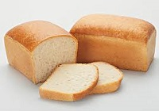
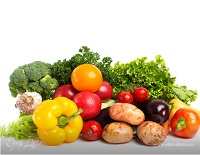
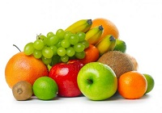
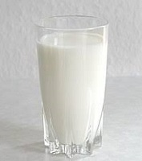
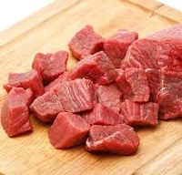
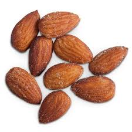
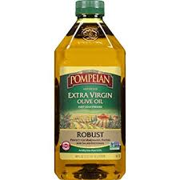
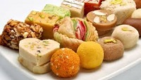

Task 1
Task 2
| Группа продуктов | Количество порций в день | Размер порций | Примеры продуктов | Значение в диете |
| Зерновые продукты  | 6-8 |
|
Хлеб (лучше цельнозерновой), пита, крупы, хлебцы, крекеры и т.п. | Главные источники энергии и пищевых волокон |
| Овощи  | 4-5 |
|
Помидоры, картофель, морковь, горошек, кабачки, любая капуста, шпинат, фасоль и т.д. | Главные источники энергии и пищевых волокон |
| Фрукты  | 2-3 |
|
Цитрусовые, виноград, бананы, абрикосы, персики, ягоды, финики, соки без добавки сахара | Богатые источники калия, магния и пищевых волокон |
| Молочные продукты (обезжиренные или с низким содержанием жира)  | 4-5 |
|
Молоко, кисломолочные продукты, творог, сыры - все обезжиренные или низкожирные (1%) | Богаты кальцием и белками |
| Постное мясо, птица и рыба  | < 170 г |
|
Мясо постное, без видимого жира, птица без кожи. Рыба может быть жирной | Богаты белком и магнием |
| Орехи, семечки, сухие фасоль и горох  | 4-5 в неделю |
|
Любые орехи, семечки подсолнечника и тыквы, фасоль, горох | Богаты энергией, магнием, калием, белками и волокнами |
| Жиры и масла  | 2-3 |
|
Спреды (мягкие маргарины), низкожирный майонез, салатные соусы, любые растительные масла | Источник жирных кислот |
| Сладости  | < 5 в неделю |
|
Сахар, варенье, конфеты, зефир, пастила, мороженое | Сладости должны быть с низким содержанием жира |